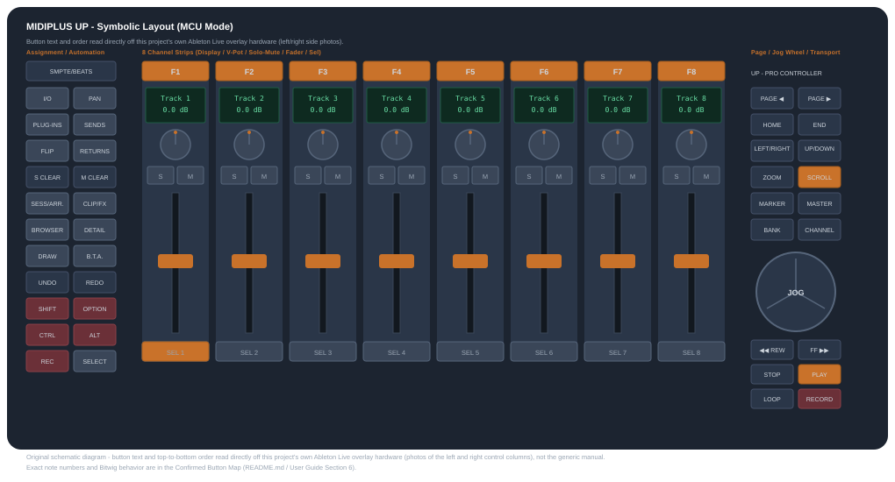

| Script file | MidiplusUP-MCU.control.js |
| Hardware mode | Standard MCU mode (manual sections 3.3 / 8) |
| Bitwig API | Version 25+ - Bitwig Studio 6.x (confirmed 6.0 / 6.1) |
| Version | Starcycle + Claude + 3.0.0-native-faders |
| Repository | starcycle-controller/bitwig-midiplus-up |
This script turns a single Midiplus UP unit (in standard MCU mode) into a dedicated Bitwig mixing and gain-staging control surface: 8 motorized channel strips plus a master strip, not a multi-unit MCU array.
It is built around three everyday jobs:
On top of that, the script adds a set of quality-of-life extras: whole-project mixer snapshots (store/recall a full Volume+Pan balance across every track, not just the visible 8), auto-banking (the bank follows track selection made elsewhere in Bitwig), and a fader position self-test.
Bitwig's Takeover Mode (Settings -> Controllers - Pick Up / Jump / Value Scaling) is Studio-wide, applying to every connected controller - there's no per-controller override in Bitwig 6.1. This script only uses Bitwig's native binding system for the 8 motorized faders, and each one opts out of Takeover Mode already (the motor keeps the fader in sync directly). Everything else is raw MIDI handled by the script's own code, bypassing Bitwig's Takeover pipeline entirely. So this setting changes nothing about how the Midiplus UP behaves - pick it based on your other connected gear instead. As a rule of thumb: Pick Up (Catch) is safer for non-motorized controllers; Jump (Immediate) suits motorized ones that already track their own position, like this one.
In Bitwig, go to Settings -> Controllers, add this script, and confirm the Midiplus UP is switched to standard MCU mode (hardware manual sections 3.3 / 8) - not one of the Logic/Cubase/Live "customized" modes.
After loading, check that Bitwig's Controllers panel (or Controller Preferences -> About -> Version) shows the version string on the cover page. An older string means Bitwig is still running a cached copy of a previous version of the script.
This setup deliberately leaves the plastic Ableton Live overlay's left and right pieces attached, and removes only its top piece. That matters for reading the button map in this guide without confusion:
Confirmed on hardware: switching the unit between Live mode and standard MCU mode does not change any button's note number - only local LED/display behavior differs - so this mapping holds regardless of which overlay pieces happen to be attached.
The PAN button's Gain-Staging mode (see Modes
below) does not control the track's own Volume/Pan - it controls a separate
utility device on that track's chain. For this to work, that device
must exist and must be named exactly TRLVL
(case-sensitive, no extra text).
Bitwig's built-in Tool device (browser category Audio FX) is the natural fit: its first two native parameters are already Gain and Pan, exactly what this script expects to find on that device's first Remote Controls page.
To set it up on a track:
TRLVL.
If you press PAN on a track with no TRLVL device yet, the
script opens the browser at the end of that track's chain automatically, so
you can add one in a couple of clicks.
| Mode | How to enter | What the faders / encoders control |
|---|---|---|
| Mixer (default) | TRACK/IO button, or leaving any other mode | Faders: track Volume. Encoders: track Pan. FLIP swaps faders/encoders between the two. |
| Sends | SEND button (cycles Sends 1-8 → 9-16 → back to Mixer, or 1-8 ↔ Mixer if Send/Return Bank Size = 8); SHIFT+SEND jumps straight to Sends 9-16 | Faders/encoders: the selected track's send levels. |
| Device / Plugin | PLUG-INS button, or F1-F8 (default orange state, selects device 1-8 directly and opens its window) | Encoders: always the 8 device Remote Control macros. Faders: Volume by default, the same macros once FLIP is on. |
| Gain-Staging (Tool Volume) | PAN button, toggle - a sub-mode of Mixer | Faders/encoders: the Gain/Pan of that track's TRLVL device instead of its own Volume/Pan - requires the Setup step above. |
| Returns | RETURNS button | Same as Mixer/Sends, but the 8 channel strips are the Return tracks instead of Main tracks. |
| Scene | B.T.A. button | Shows the clip launcher and switches Bitwig to the Mix panel layout; the jog wheel selects/launches scenes instead of scrubbing the timeline. |
Every mode-changing button fully resyncs the mode LEDs, LCD text, channel-strip LEDs, and fader/encoder bindings together in one step, and automatically closes a Device-mode plugin window when leaving that mode - jumping directly between any two modes always lands in one consistent state.
SHIFT OPTION CTRL ALT - the four buttons directly under the F-keys - are held modifiers for most of what this controller does. Encoder turns, jog-wheel turns, and some button taps all change behavior depending on which is held. A quick tap-and-release of any of them (without using it to modify anything else) also has its own configurable standalone action, described in the full settings reference (see Section 9).
| Modifier | Broad role |
|---|---|
| SHIFT | Stepped/coarser adjustment on encoders; jump-to-start/end on bank scrolling; "store" actions (Mixer Snapshots, F-key green state) and the automation-write-enable toggle on DRAW. |
| OPTION | Loop-length halve/double on the wheel; "recall" actions (Mixer Snapshots) and hover-lock for last-clicked-parameter adjustment. |
| CTRL | The most-used combo modifier: steps devices, steps clip/track selection, and combines with SHIFT/ALT for clip/track duplicate-or-delete gestures. |
| ALT | Fine-resolution adjustment on encoders/faders; adjusts the last-clicked Bitwig GUI parameter via the wheel; combines with F8 for the Fader Position Test. |
TRLVL device's Gain/Pan if Gain-Staging mode
is active (PAN button).FLIP swaps faders and encoders between volume and pan in Mixer mode, and faders only between volume and macros in Device mode.

Original schematic diagram for this project - button text and order read directly off this project's own Ableton Live overlay hardware. Not a photo; exact note numbers are in the table below.
| Button | What it does (native Ableton Live overlay function) | This project's Bitwig repurpose |
|---|---|---|
| SMPTE/BEATS | Switch the time display between SMPTE and Beats. | Hardware-only - toggles the F1-F8 row's backlight/note range in firmware; not bound to anything in Bitwig. |
| I/O | Cycle the track's Input/Output settings (Input Type, Input Channel, Output Type, Output Channel). | Toggle Track Inspector, or switch to Mixer mode. |
| PAN | Control Pan with the V-Pots. | Toggle Gain-Staging mode (a TRLVL device's Gain/Pan). |
| PLUG-INS | Enter Plug-in Edit mode for the selected track. | Toggle Device mode (selects/opens a plugin); SHIFT+PLUG-INS jumps to the last EQ in the chain (EQ Mode). |
| SENDS | Control the Send level for the selected track. | Toggle Sends mode (SHIFT jumps straight to Sends 9-16). |
| FLIP | Swap the faders' and V-Pots' functions. | Swap faders/encoders between Volume/Pan (Mixer) or Volume/Macros (Device). |
| RETURNS | Switch the channel strips between Return Tracks and Audio/MIDI Tracks. | Swap channel strips to/from the Return Tracks bank. |
| S CLEAR | Clear (disable) solo for the currently focused bank of channel strips. | Confirmed on hardware - clears solo for the current channel bank as expected. |
| M CLEAR | Clear (disable) mute for the currently focused bank of channel strips. | Confirmed on hardware - clears mute for the current channel bank as expected. |
| SESS/ARR. | Toggle Session/Arrangement View. | Toggle Bitwig's Mix/Arrange panel layout; SHIFT+press toggles the clip launcher sidebar in Arrange view. |
| CLIP/FX | Toggle Device/Clip View. | Toggle device/clip view. |
| BROWSER | Show/hide the Browser. | Toggle the browser panel. |
| DETAIL | Show/hide the Detail view. | Toggle the note/automation editor panel. |
| DRAW | Toggle Draw Mode. | Cycle the automation write mode (Latch → Touch → Write); SHIFT toggles write on/off; OPTION shows/hides automation lanes. |
| B.T.A. | Back to Arrangement. | Toggle Scene mode (clip launcher + Mix layout); ALT+press toggles the Master Wheel's metering plugin window. |
| UNDO | Undo the last action. | application.undo() |
| REDO | Redo the last action. | application.redo() |
| SHIFT / OPTION / CTRL / ALT | Modifier keys, like the ones on a computer keyboard. | Modifier hold-state used across nearly every other button/encoder/wheel gesture - see Modifier Buttons at a Glance above. |
| REC | Arms the 8 SEL buttons for record instead of select. | Same - toggles the SEL row between track.arm().toggle() and select. |
| SELECT | Default state - the 8 SEL buttons choose/activate a channel. | Same - selectInMixer() / double-press folds/unfolds a group track. |
| Button | What it does (native Ableton Live overlay function) | This project's Bitwig repurpose |
|---|---|---|
| PAGE ◀ / ▶ | Move through pages while in Plug-ins mode. | MODE_DEVICE: page the macro bank. MODE_MIXER: jump to the previous/next cue marker and move the loop to follow it. |
| HOME | Move the insert marker to the beginning. | Jump the playhead to the project start; SHIFT+HOME adds a "Bar N" cue marker at the current position. |
| END | Move the insert marker to the end. | Jump the playhead to the loop start. |
| LEFT/RIGHT, UP/DOWN | Jog-wheel mode selectors, always used together with the ZOOM button. | Same wheel-mode role this guide's Jog-Wheel Mode Buttons table calls SCROLL/ZOOM's cursor pairing - turning the wheel sends the cursor-arrow notes (96-99). Not separately hardware-confirmed as two distinct modes. |
| ZOOM | Jog-wheel zoom mode (session/arrangement zoom, paired with LEFT/RIGHT or UP/DOWN). | Toggle zoom mode for the cursor-arrow notes. |
| SCROLL | Base/default jog-wheel mode. | Base/default wheel mode - normal arranger scrub (CC 60); press enters scrub mode. |
| MARKER | Rotate the wheel to move the playhead through markers; press the wheel to add one at the current position. | Jumps to the previous/next cue marker (already bound above). |
| MASTER | Use the wheel to control the Master level. | Wheel sends absolute pitch-bend on channel 9, driving master track volume - or optionally opens/closes a metering plugin window instead (see Master Wheel settings). |
| BANK | Shift the active channel bank up/down by one bank. | Same - pages the track bank. |
| CHANNEL | Shift the active channel bank up/down by one channel. | Same - nudges one channel (CTRL = previous/next device or tempo). |
| REWIND / FAST FORWARD | Press and hold to move the cursor backward/forward through the session. | Standard transport rewind/fast-forward. |
| STOP / PLAY | Stop, or start playback from the cursor position. | Standard transport stop/play. |
| LOOP | Toggle Loop selection. | Toggle the arranger loop (CTRL sets the loop end from the playhead). |
| RECORD | Start recording on the armed track. | Standard transport record. |
Live-tested against real hardware in MCU mode. Switching the hardware between Live mode (with the overlay) and standard MCU mode does not change any button's note number - only local-firmware LED behavior differs between modes, so this map holds in either.
| Notes | Function | Bitwig behavior |
|---|---|---|
| 0-7 | Rec Arm 1-8 (SEL row while the standalone REC button is toggled on) | Toggle record-arm |
| 8-15 | Solo 1-8 | Toggle solo |
| 16-23 | Mute 1-8 | Toggle mute |
| 24-31 | Select 1-8 (double-press folds/unfolds a group track) | Select in mixer / toggle group expand |
| 32-39 | Encoder push-click | Center pan (Mixer) / reset send (Sends) / Device: hold+turn = fine resolution, or reset macro, or open/close plugin window |
| 40 | TRACK/IO | Toggle Track Inspector, or switch to Mixer mode |
| 41 | SEND | Sends mode toggle (SHIFT = jump to Sends 9-16) |
| 42 | PAN | Toggle TRLVL tool-device Gain/Pan control (Gain-Staging mode) |
| 43 | FLIP | Swap faders/encoders between volume and pan (Mixer) or volume and macros (Device) |
| 44 | PLUG-INS (SHIFT = EQ Mode) | Toggle Device mode. SHIFT+PLUG-INS jumps to the last EQ in the chain; pressed again, exits to Mixer |
| 45 | RETURNS | Swap channel strips to/from the Return Tracks bank |
| 46 | BANK PREV | Page track bank back (SHIFT = jump to first) |
| 47 | BANK NEXT | Page track bank forward (SHIFT = jump to last) |
| 48 | CHANNEL PREV | Nudge one channel back (CTRL = prev device / tempo down) |
| 49 | CHANNEL NEXT | Nudge one channel forward (CTRL = next device / tempo up) |
| 50 | UNDO | Undo |
| 51 | REDO | Redo |
| 52 | NAME/VALUE | Unbound (no Bitwig equivalent) |
| 53 | SMPTE/BEATS | Hardware-only: toggles F1-F8 backlight/range; not bound in Bitwig |
| 54-61 | F1-F8 (default/orange state) | Select device 1-8 directly and open its window; pressing the already-selected key again toggles the window |
| 62-69 | F1-F8 (green state, via SMPTE/BEATS) | Configurable editing function per key (defaults: F1=Duplicate, F2=Consolidate, F3-F8=None) |
| 70-73 | SHIFT / OPTION / CTRL / ALT | Modifier hold state; standalone tap is configurable |
| 74 | (Live label: SESS/ARR) | Toggle clip launcher / arranger view |
| 75 | (Live label: CLIP/FX) | Toggle device / clip view |
| 76 | DRAW | Plain: cycle automation write mode (Latch/Touch/Write). SHIFT: toggle Automation Write on/off. OPTION: show/hide automation lanes |
| 77 | (Live label: BROWSER) | Toggle browser panel |
| 78 | (Live label: DETAIL) | Toggle note/automation editor panel |
| 79 | B.T.A. (ALT+press = toggle metering plugin window) | Toggle Scene mode; ALT+press toggles the metering plugin's window, independent of mode - see README's Master Wheel section |
| 80, 81, 87 | Unconfirmed | Unbound - needs testing |
| 82 | PAGE (left arrow) | Device mode: page macro bank back. Mixer mode: jump to previous cue marker and follow it with the loop |
| 83 | PAGE (right arrow) | Device mode: page macro bank forward. Mixer mode: jump to next cue marker and follow it with the loop |
| 84 / 85 | - | Jump to previous / next cue marker |
| 86 | (Live label: LOOP) | Toggle arranger loop |
| 88 | (Live label: PUNCH OUT) | Toggle punch-out (CTRL = set loop end from playhead) |
| 89 | (Live label: HOME); SHIFT = add "Bar N" cue marker | Jump playhead to project start; SHIFT+HOME adds an auto-named cue marker |
| 90 | (Live label: END) | Jump playhead to loop start |
| 91-95 | Transport: REWIND / FF / STOP / PLAY / RECORD | Standard transport |
| 96 / 97 | Cursor UP / DOWN | Arrow key, or zoom track height (while ZOOM toggled) |
| 98 / 99 | Cursor LEFT / RIGHT | Arrow key, device select prev/next in Device mode, or zoom timeline (while ZOOM toggled) |
| 100 | ZOOM | Toggle zoom mode for cursor arrows |
| 101 | Jog wheel push | Momentary "Pan Mode" hold; ALT+press = select item at playhead; SHIFT+CTRL+press = same, one-shot; launches selected scene in Scene mode |
| 104-111 | Fader touch 1-8 | Optionally selects that channel's track |
| 112 | Fader touch (Master) | Optionally selects the master track - not confirmed on this 8-fader unit |
| CC 16-23 | Rotary encoders 1-8 | Mode-dependent (pan/send/macro); SHIFT = stepped or fine adjust |
| CC 60 | Jog wheel | Arranger scrub, or bar/loop/tempo nudge with modifiers, or scene navigation in Scene mode |
| Pitch bend ch 0-7 | Faders 1-8 | Motorized fader input/output, native hardware binding |
| Pitch bend ch 8 | Master (jog wheel, MASTER mode) | No separate master fader on this unit - the jog wheel substitutes pitch-bend on this channel instead; parsed manually by the script rather than a native binding, see note below |
This hardware has its own local mode buttons for the jog wheel (CURSOR / SCROLL / ZOOM / MASTER / MARKER / NUDGE / BANK / CHANNEL, per the manual's "Multi-Purpose Jog Wheel Section"). Most send no MIDI at all - they are purely local firmware state that changes what the wheel itself sends when subsequently turned.
| Mode | Mode button itself | Wheel click | Wheel turn |
|---|---|---|---|
| SCROLL (base/default) | No MIDI at all | Note 101 | CC 60 (normal scrub) |
| ZOOM | Note 100 (toggle) | Nothing | Note-On 96/97 (up/down) or 98/99 (left/right) |
| MARKER | No MIDI at all | Nothing | Note-On 84/85 - previous/next cue marker |
| BANK | Note 46/47 | Nothing | Note-On 46/47 |
| CHANNEL | Note 48/49 | Nothing | Note-On 48/49 |
| MASTER | No MIDI at all | Not yet tested | Pitch-bend, channel 9 - drives master volume, see note below |
(CURSOR and NUDGE modes not yet tested.)
This unit has no separate physical master fader - MASTER
mode substitutes the jog wheel for one. Confirmed with an independent
OS-level MIDI monitor (receivemidi, reading the hardware port
directly, bypassing this script entirely): turning the wheel with MASTER
engaged sends absolute pitch-bend on MIDI channel 9. Unlike the 8 track
faders (which use a native Bitwig hardware binding, invisible to the
script's own code), this channel is read and interpreted manually by the
script itself, so it drives master volume by default but can also be
repurposed to open/close a metering plugin's window instead, without ever
touching master volume while that's active - see the README's
Master Wheel Controller Preferences section.
Every combo in this section requires the hardware's own wheel-mode selector (see Section 7) to be set to SCROLL, the base/default mode. The physical jog wheel only sends CC 60 - the message every combo below is built on - while that local firmware mode is active. Switch it to ZOOM, MARKER, BANK, or CHANNEL and the wheel repurposes its MIDI output entirely (Note-On messages instead of CC 60), so none of the combos below will fire, with no error or feedback to explain why. If a wheel combo suddenly "stops working," check the wheel-mode selector first.
In priority order (each returns before the next is checked, so only one applies per turn): Scene mode active (move the scene cursor) > SHIFT+CTRL (configurable) > ALT+CTRL (configurable) > CTRL alone (Device mode: step devices; otherwise: select next/previous arranger clip/item) > SHIFT+ALT (nudge the selected arranger item) > ALT alone (adjust the last-clicked GUI parameter) > PLUG-INS held (step devices) > BANK held (page remote-control pages) > OPTION alone (halve/double loop length) > SHIFT alone (shift loop by a bar) > default (scrub by whole bars).
Each independently runs whichever action its own Controller Preferences dropdown is set to - freely invertible, both offer the same 5 options:
Turning left in either "Duplicate/Delete" option is gated by a separate "Allow Delete (Turn Left)" setting (default on) - off, only duplicate (right) is live. The plain Duplicate options never need that toggle, since turning left there is always a no-op by design.
Selects the next/previous arranger clip/item. With a clip selected, steps between clips on that track; with nothing selected, steps track-to-track instead. In Device mode, CTRL + Jog Wheel instead steps through devices on the current chain.
Click a clip with the mouse first to step between clips with this combo. There is currently no button/wheel gesture on this hardware that can select ("anchor") a clip from nothing - every generic Bitwig action tried for that was confirmed on hardware to do nothing at all (see Section 9). Once a clip is selected by clicking it, CTRL+Wheel reliably steps to the next/previous one from there - it just cannot establish that starting point on its own.
Halves (turn left) or doubles (turn right) the arranger loop length, capped at 256 bars doubling, floored at 1 whole bar halving.
Adjusts whatever parameter was last clicked in Bitwig's own GUI - click any knob/slider/fader once in Bitwig, then hold ALT and turn the wheel to dial it in without touching the mouse again.
ALT + Jog Wheel Press attempts to select whatever's at the current GUI focus - the same underlying action confirmed non-functional for clip selection elsewhere in this guide, so treat this as likely not actually selecting anything rather than a reliable click substitute.
SHIFT+ALT + Jog Wheel nudges whatever's currently selected in the arranger left/right by one grid step per message - this part does work once something is already selected. Since the wheel-press "select" step above is unreliable, click the item with the mouse first (same as CTRL+Wheel above), then hold SHIFT+ALT and turn the wheel to "drag" it.
OPTION + Jog Wheel Press toggles a hover-lock: locks the ALT+wheel parameter-adjust combo onto whatever parameter the mouse is currently hovering over, without needing an exact click first.
Always moves in whole bars, anchored on a bar start, at a configurable number of bars per accumulated wheel-tick threshold. An optional adaptive mode can instead scale the jump with the current Arranger zoom level, so a tick always covers roughly the same visual distance regardless of zoom.
This guide covers usage: modes, the button map, and the jog-wheel combos.
The project's README.md (in the repository root) covers the
rest, including:
feature-requests/BITWIG-API-FEATURE-REQUESTS.md (in the
repository's feature-requests/ folder, alongside the
Midiplus support email draft) lists the real Bitwig Controller API gaps
this project had to work around, for anyone interested in the
engineering background.